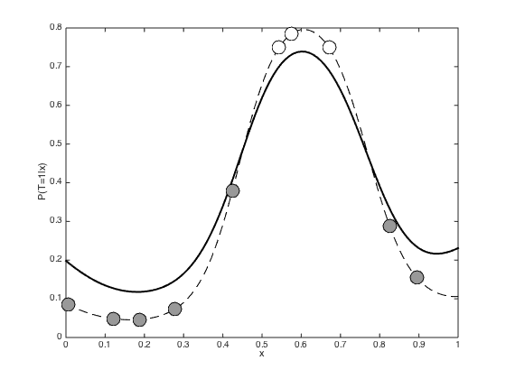
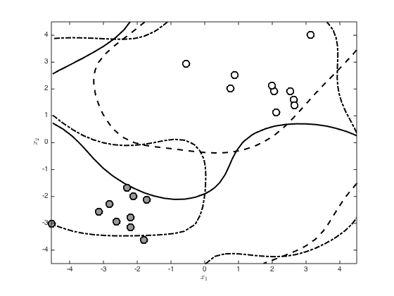
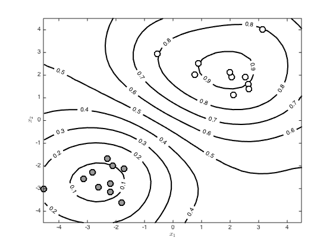

gpclasslaplace.m
Demomnstrates making predictions using the Laplace approximation for GP classification for 1- and 2-D data.
From A First Course in Machine Learning Simon Rogers, August 2016 [simon.rogers@glasgow.ac.uk]
Contents
- Full Laplace predictions - 1 dimensional data
- Setup things required -- taken from gpclass.m
- Generative model - Figure 8.18 in book
- Generate samples from the Laplace approximation and make predictions
- Laplace approximation for the 2D example
- create some random data and then change the means of the two classes to
- Full Laplace approximation - compute the test covariance
- Generate 3 sample functions from the Laplace and plot the resulting decision boundaries
- Average over lots of samples from the Laplace
Full Laplace predictions - 1 dimensional data
We can now look at the full Laplace approximation. Here we sample from the full multivariate Gaussian defined by the Laplace approximation Note that the first cell duplicates lots of things from gpclass.m
Setup things required -- taken from gpclass.m
clear all;close all; % If you don't want the exact data from the book, comment the rng line % and the two that slightly change x values rng(100); N = 10; x = rand(N,1); x = sort(x); x(3) = x(3) + 0.05; x(10) = x(10) + 0.05; % Set the covariance parameters gamma = 10; alpha = 10; % Compute the covariance matrix (training) for n = 1:N for m = 1:N C(n,m) = alpha*exp(-gamma*(x(n)-x(m))^2); end end
Generative model - Figure 8.18 in book
Change the rng parameter to get different datasets
rng(84) % Sample a function from the GP prior f = mvnrnd(repmat(0,N,1),C); p = 1./(1+exp(-f)); u = rand(N,1); t = zeros(N,1); t(u<=p') = 1; % Newton-Rapshon procedure for finding the MAP estimate of f f = zeros(N,1); invC = inv(C); % Newton-Raphson procedure (p.300) max_its = 10; it = 1; allf = zeros(max_its,N); allf(1,:) = f'; while it < max_its g = 1./(1+exp(-f)); gradient = -invC*f + t - g; hessian = -invC - diag(g.*(1-g)); f = f - inv(hessian)*gradient; it = it + 1; allf(it,:) = f'; end hessian = -invC - diag(g.*(1-g)); % Predictions with the point estimate % Define some test points for vidualisation and compute the test covariance testx = [0:0.01:1]'; Ntest = length(testx); % Compute the required covariance functions for n = 1:N for m = 1:Ntest R(n,m) = alpha*exp(-gamma*(x(n)-testx(m))^2); end end for n = 1:Ntest for m = 1:Ntest Cstar(n,m) = alpha*exp(-gamma*(testx(n) - testx(m))^2); end end % Compute the latent function at the test points fs = R'*invC*f; % Compute the posterior covariance covf = -inv(hessian); % Compute the predictive mean and covariance pred_mu = R'*invC*f; pred_cov = Cstar - R'*(C\R) + R'*(C\covf)*invC*R; pred_cov = pred_cov + 1e-6*eye(Ntest);
Generate samples from the Laplace approximation and make predictions
figure() hold off % Generate 1000 samples from the Laplace approximation samps = gausssamp(pred_mu,pred_cov,1000); % Convert into probabilities and compute mean p = 1./(1+exp(-samps)); p = mean(p,1); % Plot the Laplace predictions plot(testx,p,'k','linewidth',2) hold on % Plot the point approximation for comparison plot(testx,1./(1+exp(-fs)),'k--') pos = find(t==0); plot(x(pos),1./(1+exp(-f(pos))),'ko','markersize',15,'markerfacecolor',[0.6 0.6 0.6]) pos = find(t==1); plot(x(pos),1./(1+exp(-f(pos))),'ko','markersize',15,'markerfacecolor',[1 1 1]) xlabel('x') ylabel('P(T=1|x)')
Laplace approximation for the 2D example
Again, the first cell is setting things up, taken from class2d.m
create some random data and then change the means of the two classes to
seeparate them
rng(2) x = randn(20,2); x(1:10,:) = x(1:10,:) - 2; x(11:end,:) = x(11:end,:) + 2; t = [repmat(0,10,1);repmat(1,10,1)]; % Set the GP hyperparameters and compute the covariance function alpha = 10; gamma = 0.1; N = size(x,1); C = zeros(N); for n = 1:N for m = 1:N C(n,m) = alpha*exp(-gamma*sum((x(n,:)-x(m,:)).^2)); end end % Newton-raphson procedure to optimise the latent function values % Initialise all to zero f = repmat(0,N,1); allf = [f']; % Pre-compute the inverse of C invC = inv(C); for iteration = 2:6 g = 1./(1+exp(-f)); gra = t - g - invC*f; H = -diag(g.*(1-g)) - invC; f = f - inv(H)*gra; allf(iteration,:) = f'; end H = -diag(g.*(1-g)) - invC; % Plot the evolution of the f values % Visualise the predictive function via a large grid of test points % Create the grid [X,Y] = meshgrid(-4.5:0.3:4.5,-4.5:0.3:4.5); testN = prod(size(X)); testX = [reshape(X,testN,1) reshape(Y,testN,1)]; % Create the test covariance function R = zeros(N,testN); for n = 1:N for m = 1:testN R(n,m) = alpha*exp(-gamma*sum((x(n,:) - testX(m,:)).^2)); end end
Full Laplace approximation - compute the test covariance
Cstar = zeros(testN); for n = 1:testN for m = 1:testN Cstar(n,m) = alpha*exp(-gamma*sum((testX(n,:) - testX(m,:)).^2)); end end covf = -inv(H); pred_mu = R'*invC*f; pred_cov = Cstar - R'*(C\R) + R'*(C\covf)*invC*R; pred_cov = pred_cov + 1e-6*eye(testN);
Generate 3 sample functions from the Laplace and plot the resulting decision boundaries
change rng for different samples
rng(11) figure() hold off n_samps = 3; samps = gausssamp(pred_mu,pred_cov,n_samps); p = 1./(1+exp(-samps)); styles = {'k','k--','k-.'}; for i = 1:n_samps contour(X,Y,reshape(p(i,:),size(X)),[0.5 0.5],styles{i},'linewidth',2) hold on end pos = find(t==0); plot(x(pos,1),x(pos,2),'ko','markersize',10,'linewidth',2,'markerfacecolor',[0.6 0.6 0.6]) pos = find(t==1); plot(x(pos,1),x(pos,2),'ko','markersize',10,'linewidth',2,'markerfacecolor',[1 1 1]) xlabel('$x_1$','interpreter','latex') ylabel('$x_2$','interpreter','latex')
Average over lots of samples from the Laplace
figure() hold off n_samps = 1000; samps = gausssamp(pred_mu,pred_cov,n_samps); p = 1./(1+exp(-samps)); avgp = mean(p,1); [c,h] = contour(X,Y,reshape(avgp,size(X)),'k'); clabel(c,h) set(h,'linewidth',2) hold on pos = find(t==0); plot(x(pos,1),x(pos,2),'ko','markersize',10,'linewidth',2,'markerfacecolor',[0.6 0.6 0.6]) pos = find(t==1); plot(x(pos,1),x(pos,2),'ko','markersize',10,'linewidth',2,'markerfacecolor',[1 1 1]) xlabel('$x_1$','interpreter','latex') ylabel('$x_2$','interpreter','latex')